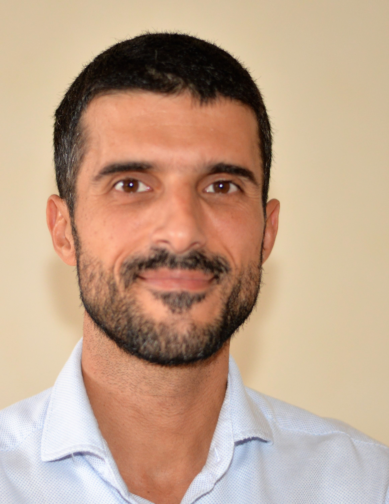

João Alegre

Summary:
I am a hardworking and dedicated individual with experience in customer service, administration and commercial assistent
Education
- High school complete
- Several disciplines in Materials Engineer at FCT (2001-2006)
- Several disciplines in Business Management at ISCTE (2007-2009)
Work Experience
Customer Care - TMN
Mar 2006 - May 2007
- Answered customer inquiries via phone and email
- Resolved customer complaints and issues
- Maintained customer records and updated account information
System Consultant - PT
May 2007 - Sept 2012
- Assisted with scheduling appointments and meetings
- Managed incoming and outgoing mail and correspondence
- Prepared reports and presentations using Microsoft Office Suite
Manager partner of an Organic agricultual company
Jan 2013 - Set 2023
- Supply Chain Management: Managing the sourcing of organic materials, production processes, and distribution to ensure organic integrity is maintained.
- Marketing and Branding: Developing and executing marketing strategies to promote organic products and build a strong organic brand.
- Regulatory Compliance: Staying up-to-date with organic regulations and ensuring the company's practices align with these standards.
- Sales and Distribution: Expanding market reach and establishing distribution channels for organic products.
- Partnerships and Collaborations: Exploring partnerships with other organic producers, suppliers, or organizations to strengthen the business.
- Employee Management: Recruiting, training, and managing a skilled workforce to support the company's objectives.
- Community Engagement: Building positive relationships with local communities, customers, and stakeholders.
- Risk Management: Identifying and mitigating risks associated with organic farming and business operations.
Commercial assistent - Tabaqueira II, SA
Aug 2017 - Present
IQOS Coach (IC)
- POS activator - B2C assistent (Aug 2017 - May 2019)
Remote Coach (RC) - May 2019 - Present
- Integrated and assist to build the pilars of Remote Channel
- Remote Coach Team Leader (May 2020 - Abr 2021)
- Support for remote coaches with several platforms and systems
- Recruiting consultent (presential and remotly)
- ISPOT creation consultent
- Build an app for remote coaches support
- Provided training to enhance the team's skills
Skills
- Customer service: ⭐️⭐️⭐️⭐️⭐️
- Microsoft Office Suite: ⭐️⭐️⭐️⭐️⭐️
- Organizational skills: ⭐️⭐️⭐️⭐️
Awards and Certifications
- Team Spirit of the Year - Iqos Coach (2019)
Others
Hobbies
Contact Me